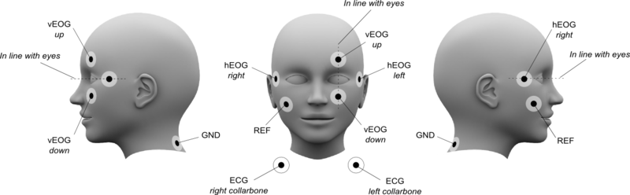

MEG Data Acquisition Checklist
Click on the checklists to mark your progress through data collection.
Prepare Control Room & MSR
-
Check functioning of stimulus and response equipment.
- Select the correct Stim PC via KVM.
- Press button 1 to connect to the OLD Stim PC.
- Press button 3 to connect to the NEW Stim PC.
- LED Meanings
- Green/Dark for connected PCs, but not active.
- Green/Red for connected PCs actively using the KVM.
- Dark/Dark for no connection.
- Select the correct Parallel Port via the Parallel Port (PP) Switch Box.
- Use PP Switch position A to connect STI101 to the OLD Stim PC (PP Base Memory Address: BFF8)
- Use PP Switch position B to connect STI101 to the NEW Stim PC (PP Base Memory Address: CFF8)
- Select the correct Stim PC via KVM.
-
Check Gantry position. Move from liquefaction (25) position to usage position.
-
Check experimental paradigm.
- Check the PROPixx projector is "awake" (make sure lens cover is removed).
- Start the VPutil program, from the Stim Desktop shortcut, and type...
- (ANY DEVICE) >
ppx a- should respond with "PROPixx is in awake mode" - To "sleep" the projector ...
- (ANY DEVICE) >
ppx s- should respond with "PROPixx is in sleep mode" - Please do not leave the PROPixx projector in "awake" mode when not in use e.g. overnight!
- NOTE:
ppx a / ppx sdidn't work on one occasion. PROPixx needed a full power off/on to reset.
- NOTE:
- Check that the stimuli and responses are as expected.
- Check arrival of triggers in MEG recording.
- NOTE: New Stim PC PP card has a different Base Memory Address than the OLD Stim PC.
- Change any, e.g. MATLAB, code on the NEW Stim PC, referencing the PP Base Memory Address to...
- CFF8 ... e.g. in
initialiseParallelPort.m
- CFF8 ... e.g. in
- Change any, e.g. MATLAB, code on the NEW Stim PC, referencing the PP Base Memory Address to...
- NOTE: New Stim PC PP card has a different Base Memory Address than the OLD Stim PC.
- Check the PROPixx projector is "awake" (make sure lens cover is removed).
-
Start subject preparation - items to have ready/available.
- Label 4 electrodes for EOG, 2 electrodes for ECG and any other (i.e. EMG) electrodes as required. Have some additional electrodes ready in case you have to redo them.
- NOTE: Reusable and disposable electrodes are available.
- Electrode gel (in 20ml syringes - use the caulking gun to fill them.) We also have 12ml curved tip syringes available.
- Cut tape ready for attaching electrodes to skin (Tegaderm tape)
- Cut tape for securing electrodes (Micropore tape) and Blenderm tape for attaching cHPI coils.
- Small double-sided sticky discs used to secure reusable electrodes.
- If using an EEG cap, check it over for damaged electrodes. Makes sure it's clean and dry.
- Set up the Digitiser chair, away from any metal. Attach the transmitter cube to the back of the chair. The cable has to point downwards.
- See this page for our various consumable items - MEG Consumables
- Label 4 electrodes for EOG, 2 electrodes for ECG and any other (i.e. EMG) electrodes as required. Have some additional electrodes ready in case you have to redo them.
-
Check the MSR, yourself, and participant, for any unwanted items that could cause artefacts and remove them.
- See this PDF... Metal items Checklist
-
Check that the participant monitoring camera and microphone are working correctly.
Prepare MEG system
- Prepare system.
- Check quality of channels.
- Click "Noisy Channels" for more information
- Select or create project.
- Check or select acquisition parameters.
- Check or create online averaging parameters'
- Create subject.
Prepare subject
- Offer bathroom break.
- Explain preparation procedure.
- Explain experiment.
- Let subject read and sign informed consent.
- Have subject remove metal objects, and do a comprehensive check with both metal detectors. Subject to change into scrubs if necessary (show subject to Changing Room and show scrubs sizes that are available).
- We are trying to reduce our laundry bill so only use scrubs if necessary e.g. metal in clothing.
- cClean hands with Alcohol Gel Sanitizer.
Attach electrodes
Sanitise your hands with the provided Alcohol gel. We have both reusable and disposable electrodes available for use. When ready to attach a reusable electrode:
- Carefully attach a sticky disc to the electrode, centering the hole over the grey Ag/AgCl. Remove the paper protective cover, exposing the disc adhesive.
-
Using a gel-filled syringe and blunt needle, place a drop of gel in the electrode center.
-
If using the [NeuroTab] disposable electrodes.
- Remove the transparent backing from the electrode and place the electrode on the prepared site.
- To ensure good contact, apply pressure to the center of the electrode and move to the edges.
-
Do not pull on the cable when applying it or when attached. Apply Micropore tape as necessary to help secure it in place.
-
Rub skin with alcohol pads where the electrodes and HPI coils will be attached (see figure 1 below). Don't overdo it as the skin can become sensitive. Some Operators also like to then abrade the skin with NuPrep paste. Using one of our small stainless steel bowls, squeeze out some NuPrep and rub it onto the skin using a cotton bud.
- Use tissues to gently wipe-off excess NuPrep as it is non-conducting (some Operators then like to re-wipe the skin with an alochol pad).
- hEOG: Attach an electrode on the outside of the subject's left eye (hEOG left) and on the outside of the subject's right eye (hEOG right). Make sure that the electrodes are in line with the eyes.
- vEOG: Attach an electrode above subject's right eye (vEOG up) and below the subject's right eye (vEOG down). Make sure that the electrodes are in line with the eyes.
- ECG: Attach an electrode on the left collarbone (ECG left) and on the right collarbone (ECG right).
- GND: Attach an electrode on the back of the subject's neck (GND).
- REF: Attach an electrode on the subject's right cheekbone (REF).

NOTE: REF may not be required for the bipolar EOG, ECG, but use as necessary if channels are noisy. For EMG, site REF electrode where required/as per your paradigm. Use Micropore tape over the electrodes to help hold them in place.
Note
Our Electrode input on the gantry is to the right of the subject, so we use the right eye for vEOG.